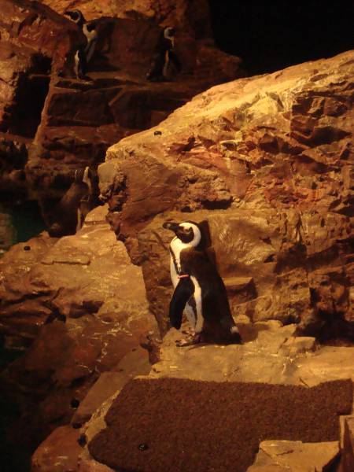
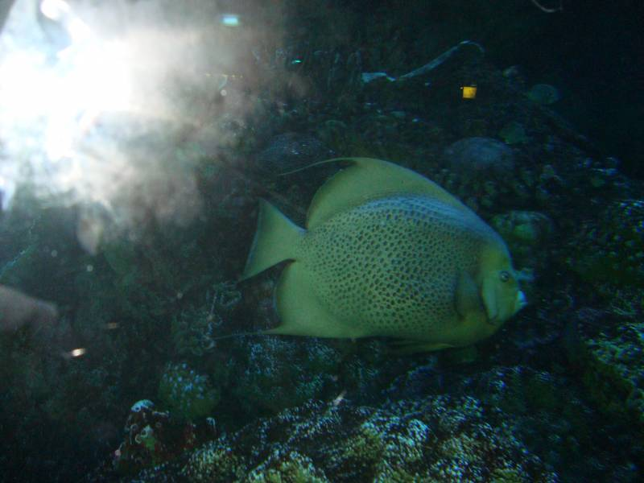

Vzhledem k tomu, že hned po promoci se brácha musel vystěhovávat z koleje na nový privát, rozhodne se dát si jeden den voraz a pořádně si před výletem do New Yorku odpočinout. Vyšle nás tedy do Bostonu samotné a přidá pár tipů, kam vyrazit a co shlédnout. Nakonec se rozhodneme pro Aquarium, které nám doporučovali už Maríini rodičové. Zvládneme k němu dorazit metrem poměrně bez kolizí - a to dokonce se dvěma přestupy :D ! Aquarium se nachází na samém břehu Atlantiku a od metra k němu trefíme poměrně snadno - už zdálky nás uhodí do očí dloooouhatánská fronta, před kterou nás Luk nicméně varoval. Hýbe se celkem rychle, ale přesto si v ní minimálně půlhodinku vystojíme. Co nás čeká vevnitř ale rozhodně stojí zato - za pavilonem tučňáků (nojo, smrdí stejně jako ti v Lešné, ale stejně jsou strašně srandovní a roztomilí :D…) už začíná dlouhá řada akvárek, ve kterých se to hemží všemožnými vodními tvory od mořských hvězdic až po medúzy.

Tučňáci
Uprostřed celého areálu se nachází obrovské kruhové akvárium, ve kterém se prohání krom všelijakých druhů ryb a rybiček taky čtyři nefalšovaní žraloci, tři rejnoci (táta rejnok - pomalu plave, máma rejnok - spí na kameni a malý rejnok - rebel, který plave akvárkem jak šílený :D…) a dvě veliké mořské želvy…a mezi nima dva potápěči, kteří akvárko čistí od bince :D. Docela se divím, že se to tam všecko navzájem nepožere :D…Je to opravdu mimořádná podívaná, stojím u akvárka minimálně půl hodiny s nosem přilepeným na skle (takže se občas dost leknu, když se mi před obličejem nečekaně vynoří nějaká mořská potvora :D) a hltám očima tenhle svět pod hladinou.

Svět pod hladinou
Když ale vyjdeme po točité chodbičce až nahoru, kde si můžeme celé akvárko prohlédnout zvrchu, padne na mě tak nějak stesk, jak tak vidím, že si milé rybky plavou v kruhu pořád dokola a přitom patří do oceánu. Splín se mě nepustí ani později, když se jdeme podívat na molo a vyfotit si moře. Nebe se brzo zatahuje a cestou zpátky do centra nás málem přepadne liják. Naštěstí máme hlad, takže zapadneme do nějakého pochybného podniku a dáme si tam sendviče. Jsem tak skleslá, že dokonce vytahuju matroše do občana a jdu se učit, abych přišla na jiné myšlenky :D…Nebaví mě už ani prolízání obchůdků, kterých je i v téhle části Bostonu požehnaně. Navečer se vracíme zpátky do Cambridge a brácha nás ještě vytahuje na zmrzku a čokoládu a vyprává se mě, kam bych se chtěla v New Yorku podívat. Domlouváme se na posledních podrobnostech ohledně zítřejšího výletu a nakonec si dáváme sraz na půl 7 ráno…nejsem si jistá, jestli takhle brzké vstávání přežiju, proto preventivně zalehnu do postele už v 9 večer a stejně brzo vytuhnu. Začínám si říkat, že se tady z toho časového posunu už asi nikdy v životě nedostanu :D…
Vivat blog!